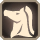

Caballo de Ferganá
Abrir en la wiki →Caballo. Alazán musculoso que muchos generales eligen como montura desde la antigüedad
- Tipo
- Caballo
- Clases que la montan
- Jinete ligero, Cuadriguero, Jinete arquero, Jinete bardado, Catafracto, Trovador, Prodigio, Caballero arco, Auricalcado, Jinete pesado, Seir, Valquiria, El Cabalgador